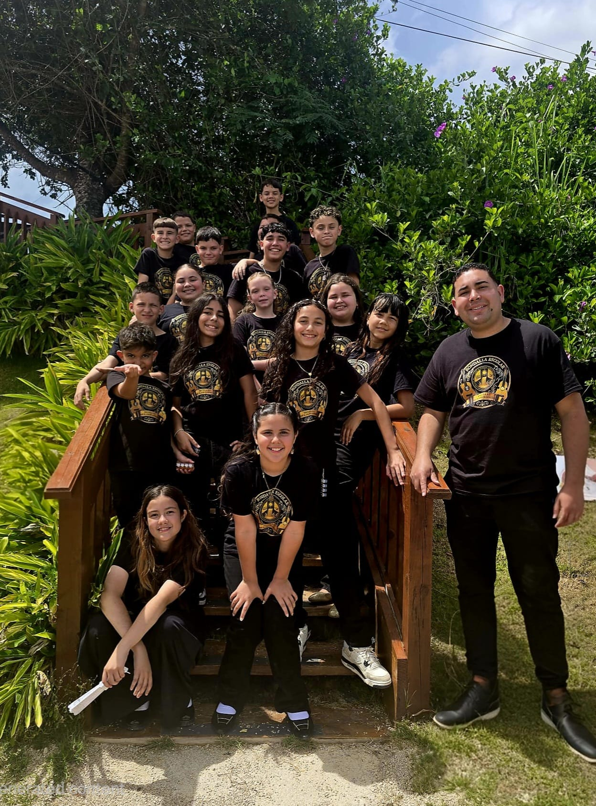

Misión
Fomentar el desarrollo musical, cultural y humano de nuestros estudiantes mediante la interpretación colectiva, cultivando la disciplina, la colaboración y el amor por las tradiciones musicales de Puerto Rico.
Nuestra rondalla
Quiénes somos, qué nos mueve y con qué instrumentos contamos nuestra historia.
Historia
La Rondalla Escolar JNCG nace en la Escuela S.U. José N. Colón González, en Barranquitas, del deseo de que los estudiantes conozcan, toquen y compartan la música de Puerto Rico como parte de su formación.
El 1 de octubre de 2026, Día Internacional de la Música, se presentó oficialmente ante su comunidad escolar. Dos días después subió por primera vez a la tarima del Reloj de las Flores de Puerto Rico.
Con el apoyo de las familias y del Comité Timón, la historia apenas comienza, y aquí la iremos contando.
¿Eres exalumno o tienes fotos y recuerdos de la rondalla? Escríbenos; nos encantaría incluirlos.

Misión
Fomentar el desarrollo musical, cultural y humano de nuestros estudiantes mediante la interpretación colectiva, cultivando la disciplina, la colaboración y el amor por las tradiciones musicales de Puerto Rico.
Visión
Ser una rondalla escolar que inspire orgullo por nuestra cultura, fortalezca los vínculos con la comunidad y abra oportunidades de crecimiento a través de la música.
Valores
Instrumentos y raíces
Pulsa los botones de cada ficha para escuchar cómo suena. Son sonidos generados por tu dispositivo para jugar y aprender; las grabaciones reales de la rondalla se añadirán cuando estén autorizadas.